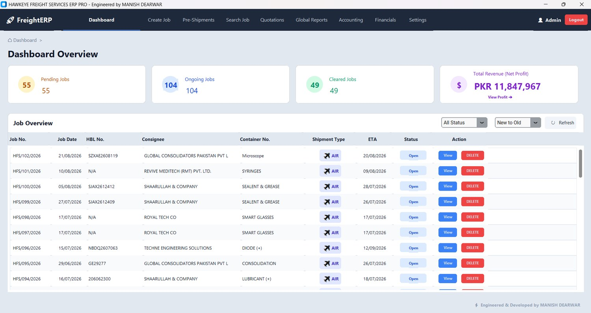

Freight Forwarding ERP
One connected system for the whole freight job — from the first booking to the final ledger entry — built for forwarders who are tired of re-typing the same shipment data into five different Excel files.

Why this needed to exist
In a typical forwarding office a single shipment lives in many places at once: a booking sheet, a container tracker, a cost sheet, an invoice file, a payments register and a few WhatsApp threads. The same data is typed again and again, and the operational picture and the financial picture slowly drift apart. Month-end becomes a reconciliation exercise instead of a report.
What I built
I built a single system where a Job is the centre of everything. Shipment details are entered once, and containers, bills of lading, cost sheets, invoices, payables and receivables all hang off that one job. Status changes flow through the lifecycle, and the ledger and reports are generated from the same data the operators already work in — so there is nothing to reconcile.
What it can do
Job lifecycle
Create, manage and close jobs with a clear status trail across SEA-FCL, SEA-LCL and AIR shipments.
Container & B/L workflows
Track containers, bills of lading, arrival and delivery steps against the right job.
Cost sheets & invoicing
Build job-wise cost sheets and raise invoices from the same job data, with PDF output.
Payables & receivables
Party-wise payable and receivable tracking with balances and actions in one view.
Reports & ledger
Global reports and ledger views, filterable by party, so finance can see where the money is.
Operational dashboard
A live overview of jobs, shipment status and financial position for daily decisions.
What is built — and what is not
I like being clear about where a project actually stands, so you know exactly what you are looking at.
✅ Built & working
- Secure login / application entry screen
- Operational dashboard (jobs, status, financial overview)
- Job creation → management → closure workflow
- SEA-FCL, SEA-LCL and AIR shipment flows
- Container, B/L, arrival and delivery handling
- Cost sheets, invoices, payables and receivables
- Global reports and party-wise ledger
- PDF generation for business documents
🚧 Not built yet
- Customer-facing tracking portal
- Direct live integration with carrier / shipping-line APIs
- Native mobile app (currently a web application)
- Full statutory accounting / tax filing module
Real interfaces, not mockups
Use the numbers / arrows to move through the screenshots. Click the big image to open it full screen.
See it in action
Tech stack
What I learned
- Model the workflow around a single job record and the rest of the system gets simpler.
- Operators want fewer screens and fewer clicks far more than extra features.
- Keeping finance and operations on the same data removes most reconciliation work.
Need something like Freight Forwarding ERP?
Tell me about your process. I'll reply on WhatsApp with what I would automate and what the first version should include.